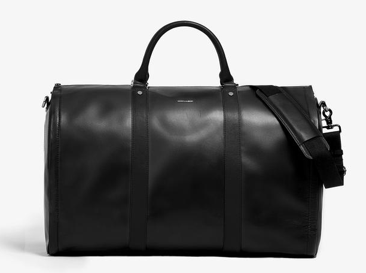

Gear
I have tried and tested a few gadgets and clothing that I absolutely need to have with me while traveling. This is my gear, this is my equipment, this is what I upgraded to +10 and to have the perfect stats
My Motto is buy nice or buy twice. I have found that aiming for quality and buying things that would last me a lifetime is a more frugal strategy over the long term and better for the environment/less waste.
- Bags
- Cote et Ciel Isar
- Hook and Albert Weekender
-

The perfect carry-on bag. Because it is more compact than rollies, you will never get stopped to ask to have this checked in. It also survives the check in as well. Fits quite a bit and collapses for storage. It has a pretty well working hangar compartment for pants/shirts. Shoes compartments on the sides too. I love this bag
- Clothes
- Ministry of Supply
- Outlier NYC
-
The shirts are pretty good here but they need to be ironed, but otherwise they are great for heavier climates and durability. The light shortsleeve shirts are great here too. I really like the Slim Dungarees for my go to Pants. These are very durable, high tech and form-fitting. I have not found slim pants that feel and fit this great. I have not worn jeans in years because of these. These are waterproof and you can even put out a cigarette on them without any damage. Very tough.
- Shoes
- Wolf and Shepherd
-
I really like the Sienna Wingtips and the Onyx Breakaway boots. These actually feel like sneakers and the quality is very high.
- Adidas Ultraboosts

-
I used to be a sneakerhead and have a pretty solid collection but it all ended once I tried on the Ultraboosts. There's really no sneaker as comfortable as these.
Not a fan of the new 19s, I rock the 3.0 and 4.0's in Triple Black.
- Sunglasses
- Roav Virgil

These are sturdy and super compact. Able to keep them in my pocket. I used to use the Ray Bans forever but these compactness just beat it. The nosemarks don't appear because these are so light.
- Electronics
- Google Pixel 2 XL
- Google Pixel Buds
- Bang and Olufsen h8's
- Nintendo Switch
- Apple Macbook
- MyCharge USB C portable charger
Amazing backpack with style and utility. Perfectly stores my laptop, anti theft compartment for important things. Secret compartment on the side. Front is a duffel that fits a whole bunch of things. Waterproof. This backpack is what I consider to be life-lasting
Shirts are comfortable breathable, light on the maintenance and durable. Form fitting and stretchy for those days. I like the Hybrid Dress Shirts. The shirts are pretty high tech too!

Charges all my devices. This thing is simply amazing with the plugs already connected